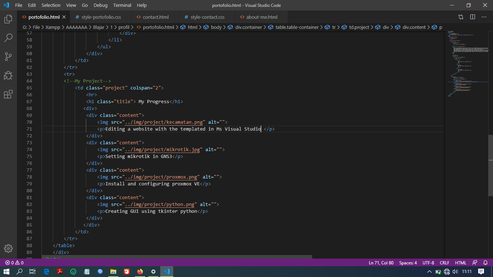
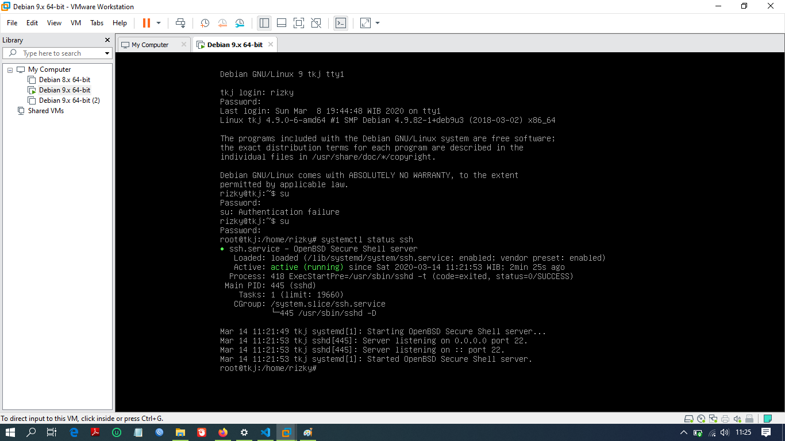
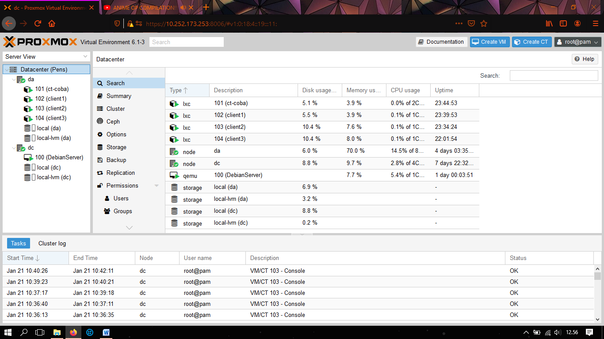
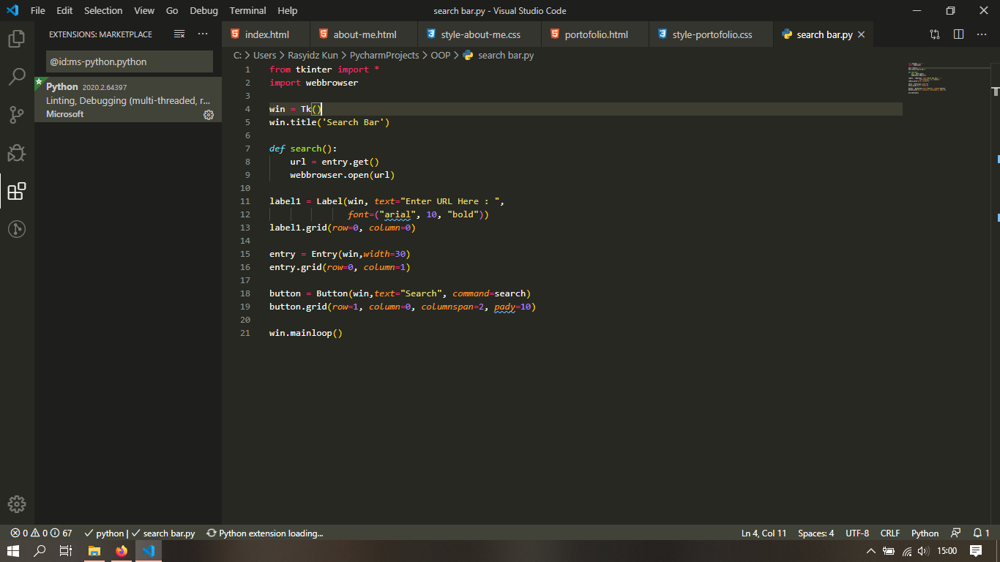

-
Linux
20%
-
Mikrotik
16%
-
Paket Tracer
32%
My Profile
Sekali lagi perkenalkan nama saya Rizky Ahmadi, kalian bisa memanggil saya Rizky. Saya lahir di kota Trenggalek. Lebih tepatnya pada hari senin tanggal 15 April 2002.
Hal tersebut membuat saya hampir berusia 18 tahun. Saya tinggal di Sebuah desa bernama Wonocoyo di kecamatan Panggul Kabupaten trenggalek. Sekarang saya sedang menempuh pendidikan di Smkn 1 Pogalan.
Dengan mengambil jurusan Teknik Komputer dan Jaringan, atau bisa kalian sebut TKJ
Saya tidak memiliki hobi yang spesifik dikarenakan saya hanya melakukan sesuatu dikala saya sedang suka/mood-nya lagi bagus saja.
Terkadang saya mengisi waktu luang dengan bermain game atau membaca komik.Saya juga suka bermusik terutama bermain ukulele atau gitar.
Saya ingin menemukan hobi yang berhubungan dengan tekonolgi atau IT dikarenakan itu bisa sangat membantu untuk dikemudian hari.
|
My Skill
|
My Progress

Editing a website with the templated in Ms Visual Studio

Install and setting the configuration SSH Server in Debian 9

Install and configuring proxmox VE

Creating GUI using tkinter python |
|